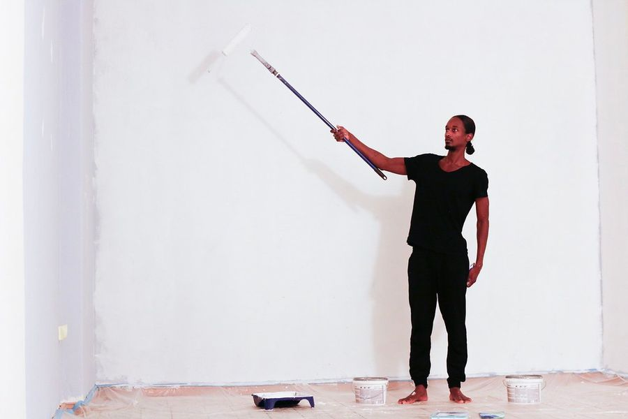

Keşif talebinizi hazırlayın
Birkaç seçimle işinizi anlatın, mesaj kendiliğinden yazılsın. Göndermeden önce metni görür, isterseniz kopyalarsınız. Bu form hiçbir yere kayıt yapmaz; yalnızca WhatsApp mesajınızı hazırlar.
Kaç m² boyanacak, kaç litre boya gider?
Odanın enini, boyunu ve tavan yüksekliğini girin. Kapı ve pencereler düşülür, boyanacak duvar alanı ve yaklaşık boya miktarı çıkar.
Sonuç bir ön fikirdir. Kesin ölçü ve malzeme hesabı keşifte yapılır.
- Duvar alanı
- 0 m²
- Tavan alanı
- 0 m²
- Toplam boyanacak alan
- 0 m²
Ölçüleri girin
Varsayımlar: bir kapı yaklaşık 1,9 m², bir pencere yaklaşık 1,7 m² sayılır. Emici, tamirli ya da koyu renkli yüzeyde boya tüketimi artar.
Keşiften önce yedi küçük hazırlık
Bunları önceden düşünmüş olmanız keşfi kısaltır ve sonradan çıkabilecek sürprizleri azaltır. İşaretledikleriniz bu cihazda saklanır.
0 / 7 hazır
Keşifte neler konuşulur?
Keşif yalnızca metre tutmak değildir. İyi bir keşiften sonra iki tarafın da aklında soru kalmaz.

- KapsamHangi odalar, tavanlar, kapılar, pervazlar ve radyatör arkaları işe dahil? Yazılı olarak netleştirmek en sağlıklısıdır.
- Yüzeyin durumuNerede tamir, nerede macun, nerede astar gerekiyor? Nem ya da küf varsa kaynağı ne?
- MalzemeHangi boya, hangi parlaklık, kaç kat? Malzemeyi kim alacak?
- Takvimİş hangi gün başlar, hangi sırayla ilerler? Evde yaşanacaksa hangi oda ne zaman kullanılamaz?
- Koruma ve temizlikEşyalar nasıl korunacak, iş bitince ev hangi durumda teslim edilecek?